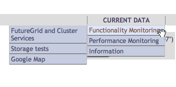
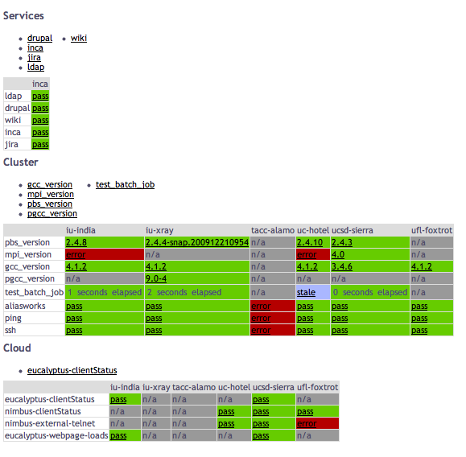
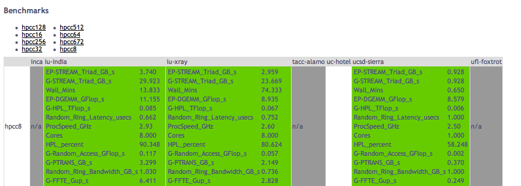

One of the main goals for FutureGrid is providing quality assurance of
our software components. This document will describe the quality
assurance methods employed by Inca on FutureGrid and will describe how
to contribute additional functionality tests to it.
Another major goal for the FutureGrid performance group is to assess the
performance of the FutureGrid infrastructure. As such, both active and
passive performance measurements will be collected and analyzed. This
document will also describe the active measurement collection method
using by Inca. For passive measurements, please see the Netlogger How
To
document.
Inca is a tool used for monitoring the user-level functionality and
performance of cyberinfrastructure systems. It automates the
installation, execution and maintenance of a large variety and number of
reporters (monitoring scripts) consistently across resources. Monitoring
results are collected, archived, and then displayed through web status
pages. Currently, there are 196 Inca
reporters available to test and measure aspects of FutureGrid systems.
This document will describe the reporters deployed today on FutureGrid
and how to either deploy an existing reporter to test your FutureGrid
component or write a new Inca reporter using either the Perl or Python
API.
Many monitoring systems run from the perspective of the system
administrators and do not test beyond whether a port is open or not. While important, we have found that it is really important to test from
the perspective of the user to ensure the software is properly installed
and is accessible to users. Therefore, Inca runs from a regular user
account and in practice is setup like any other user account.
Oftentimes, commands that are printed in the user guides or manual are
good tests that can be wrapped into an Inca reporter. Even just one or
two simple unit tests can be effective in detecting installation or
permission problems.
Ideally, we would like to monitor frequently in order to quickly detect
problems before the users notice them. However, active measurements
introduce load into the system and it is important to not interfere with
users. Therefore consider the measurement you are collecting and select
a measurement frequency that balances freshness of results with impact
on the system; i.e., active measurements that introduce minimal load on
the system can be run at a higher frequency than active measurements
that introduce medium to high load to the system.?If applicable, you
may consider decomposing a measurement into multiple parts so that the
lightweight parts that can be run more frequently. For example,
checking that a VM is successfully deployed via RAIN introduces load to
the system and should probably not be executed more than once every few
hours. ?However, we could run a test that queries the list of available
VMs every 10 minutes with minimal load to the system.
The easiest way to get started with monitoring your component is to
write a simple unit test.?This test can be a simple command from the
user documentation that every user is likely to run and you can likely
leverage an existing Inca reporter to test it as discussed below. Once
you gain some familiarity with Inca, you can develop more intricate
tests to verify more functionality of your component or to detect
frequently occurring problems users are reporting.?As you develop more
intricate tests, consider the performance of your component and the data
that would be useful to collect in order to detect performance problems
and identify bottlenecks.?For example, to measure the performance of
RAIN’s invocation mechanism, we would like to know: 1) the time to
transfer a VM to the resource, 2) the time to submit the request to
Eucalyptus/Nimbus/XCAT, 3) the time before the VM is pingable, and 4)
the time before the VM is login-able. Inca provides a flexible data
model so any information you can express in a XML document is supported
and is described further below. Email notifications can be set if
performance drops beyond a threshold and the data can be viewed through
the Inca web pages.
As mentioned above, there are 196 existing Inca reporters available in
the FutureGrid reporter repository.?Click on the link below to view the
list of Inca reporters and click on each name to view the usage data and
see the source code.
http://inca.futuregrid.org/repository
If your software component runs on TeraGrid, it is likely we have an
existing Inca reporter for it.?Otherwise, you might check out some of
our generic reporters listed below:
- user.search.output.unit?-
takes as input a command to execute and a list of regular expressions
to look for in the output to indicate the command succeeded; e.g.,
the following executes a ldapsearch command and looks for the string
“result: 0 Success”
% user.search.output.unit -com="ldapsearch -h im3r.idp.iu.futuregrid.org -x -b'dc=futuregrid,dc=org' '(objectclass=*)'" \
-delim="|" -help="no" -log="3" -search="result: 0 Success" -verbose="1" -version="no"
- grid.wget.unit?-
takes as input a url and checks to see if the webpage load
successfully. E.g., the following checks that the Inca web page
loads correctly.
% grid.wget.unit -help="no" -log="0" -page="http://inca.futuregrid.org" -verbose="1" -version="no" -wgetArgs=""
The following checks that the Eucalyptus web page on India loads
successfully:
% grid.wget.unit -help="no" -log="3" -page="https://eucalyptus.india.futuregrid.org:8443" -verbose="1" -version="no" -wgetArgs="--no-check-certificate"
If you would like to deploy an existing Inca reporter for your
component, email Shava Smallen at ssmallen@sdsc.edu with the name of the
reporter, the arguments, frequency of execution, and whether you want
email notification upon failure or file a Jira ticket for Shava.Smallen.
If there is no existing reporter for your FutureGrid component, it is
straightforward to write a new one with the Inca Perl and Python APIs.
To access the APIs, first download the tar.gz file such as
% wget http://inca.sdsc.edu/releases/latest/Inca-Reporter.tar.gz
Then unzip/untar the tar.gz file
% tar zxvf Inca-Reporter.tar.gz
% ls Inca-Reporter-*
COPYRIGHT ChangeLog MANIFEST Makefile Packages.gz bin cgi-bin docs etc lib sbin share version
The reporters are located in the ‘bin’ directory and the Perl and Python
APIs are in ‘lib/perl’ and ‘lib/python’ respectively. Next checkout the
latest reporters developed from svn and put them in a ‘bin.svn’
directory
% svn checkout https://futuregrid.svn.sourceforge.net/svnroot/futuregrid/core/trunk/src/performance/benchmarking/framework/inca/bin bin.svn
A bin.svn/performance.infiniband
A bin.svn/futuregrid.cluster.partition
A bin.svn/performance.hpcc
Checked out revision 487.
All reporters can be run on the command line and will print XML as shown
below. ?Help information for a reporter can be printed by adding
argument ‘-help’ which will by default print the help info in XML.?To
print it in text format, also add ‘-verbose=0’ argument.?For
information about the report XML schema, please see the Inca User
Guide.
% env PERL5LIB=lib/perl PYTHONPATH=lib/python ./bin/grid.wget.unit -page="http://inca.sdsc.edu"
<?xml version='1.0'?>
<rep:report xmlns:rep='http://inca.sdsc.edu/dataModel/report_2.1'>
<gmt>2010-10-29T22:53:59Z</gmt>
<hostname>client64-139.sdsc.edu</hostname>
<name>grid.wget.unit</name>
<version>7</version>
<workingDir>/tmp/Inca-Reporter-5.12450</workingDir>
<reporterPath>./bin/grid.wget.unit</reporterPath>
<args>
<arg>
<name>help</name>
<value>no</value>
</arg>
<arg>
<name>log</name>
<value>0</value>
</arg>
<arg>
<name>page</name>
<value>http://inca.sdsc.edu</value>
</arg>
<arg>
<name>verbose</name>
<value>1</value>
</arg>
<arg>
<name>version</name>
<value>no</value>
</arg>
<arg>
<name>wgetArgs</name>
<value></value>
</arg>
</args>
<body>
<unitTest>
<ID>wget</ID>
</unitTest>
</body>
<exitStatus>
<completed>true</completed>
</exitStatus>
</rep:report>
% env PERL5LIB=lib/perl PYTHONPATH=lib/python ./bin/cluster.uptime.performance
<?xml version='1.0'?>
<rep:report xmlns:rep='http://inca.sdsc.edu/dataModel/report_2.1'>
<gmt>2010-10-29T22:55:33Z</gmt>
<hostname>client64-139.sdsc.edu</hostname>
<name>cluster.uptime.performance</name>
<version>1</version>
<workingDir>/private/tmp/Inca-Reporter-5.12450</workingDir>
<reporterPath>./bin/cluster.uptime.performance</reporterPath>
<args>
<arg>
<name>help</name>
<value>no</value>
</arg>
<arg>
<name>log</name>
<value>0</value>
</arg>
<arg>
<name>verbose</name>
<value>1</value>
</arg>
<arg>
<name>version</name>
<value>no</value>
</arg>
</args>
<body>
<performance>
<ID>load average</ID>
<benchmark>
<ID>load average</ID>
<statistics>
<statistic>
<ID>fifteen minute</ID>
<value>0.30</value>
<units>fraction</units>
</statistic>
<statistic>
<ID>five minute</ID>
<value>0.30</value>
<units>fraction</units>
</statistic>
<statistic>
<ID>one minute</ID>
<value>0.30</value>
<units>fraction</units>
</statistic>
</statistics>
</benchmark>
</performance>
</body>
<exitStatus>
<completed>true</completed>
</exitStatus>
</rep:report>
Inca accepts any type of data that can be expressed as an XML document
with a size limit of 12,000 chars.?The Inca reporter APIs provide will
help you print out XML and wrap it within the Inca schema. There are
also a number of convenience APIs for writing specific types of
reporters. The advantage of using one of these APIs is that the Web
status pages already know how to display the data (e.g., in graphs).
Links to the API documentation are below:
Please see the Reporter section of the Inca user guide as well.
Often the easiest way to get started is to find a reporter similar to
the one you want to write, copy it, and then modify it. Some common
reporter types are shown below.
If you need a more elaborate test than what the
user.search.output.unit
reporter provides, you will want to utilize the SimpleTest schema in
either
Perl
or
Python.
You might copy over the
reporter?data.access.postgres.unit.connect,
change the arguments, command, and log messages. Note, to get the log
messages to print you must run the reporter with ‘-log=3’ or higher.
#!/usr/bin/env perl
use strict;
use warnings;
use Inca::Reporter::SimpleUnit;
my $BACKOFF_SECS = 30;
my $reporter = new Inca::Reporter::SimpleUnit(
name => 'data.access.postgres.unit.connect',
description => 'Tries to connect to postgres server and list databases',
version => 8,
unit_name => 'postgres connect'
);
$reporter->addArg('exec', 'postgres user account', 'psql');
$reporter->addArg('user', 'postgres user account', '');
$reporter->addArg('numTries', 'number of connect attempts before giving up', 5);
$reporter->processArgv(@ARGV);
my $user = $reporter->argValue( 'user' );
$user = "-U $user" if $user ne '';
my $psql = $reporter->argValue( 'exec' );
my $numTries = $reporter->argValue( 'numTries' );
my $success = 0;
my @output;
my $i;
for( $i = 0; $i < $numTries && ! $success; $i++ ) {
sleep( $BACKOFF_SECS * $i ) if $? != 0;
@output = $reporter->loggedCommand("$psql $user -l");
$success = 1 if $?
If you wanted to ensure the version of a software component is
consistent across all machines, you will want to use the Version schema
in either
Perl
or
Python.
There are a number of convenience methods for fetching the version such
as setVersionByCompiledProgramOutput, setVersionByExecutable, or
setVersionByFileContents. The below reporter prints out the version of
Perl on a system.
#!/usr/bin/env perl
use strict;
use warnings;
use Inca::Reporter::Version;
my $reporter = new Inca::Reporter::Version(
name => 'cluster.lang.perl.version',
version => 2,
description => 'Reports the version of perl',
url => 'http://cpan.org',
package_name => 'perl'
);
$reporter->processArgv(@ARGV);
$reporter->setVersionByExecutable('perl -v', 'perl, v([\d\w\.\-]+)');
$reporter->print();
If the data you want to collect from an active measurement does not
match any of the above categories, consider developing your own schema
in either
Perl
or
Python. For an example of a reporter that uses just the base Reporter class,
please see the
cluster.admin.topcpu
reporter.
#!/usr/bin/env perl
use strict;
use warnings;
use Inca::Reporter;
my $reporter = new Inca::Reporter(
name => 'cluster.admin.topcpu',
version => 3,
description => 'Reports top non-root CPU % process',
url => 'http://inca.sdsc.edu'
);
$reporter->processArgv(@ARGV);
my $output = $reporter->loggedCommand('ps waux');
$reporter->failPrintAndExit("ps waux failed: $output $!") if $?;
my $highestCpu = 0;
my $highestLine;
foreach my $line(split(/\n/, $output)) {
next if $line =~ /%|^root/; # Skip header and root procs
my @columns = split(/\s+/, $line);
my $cpu = $columns[2];
next if $cpu < $highestCpu;
$highestCpu = $cpu;
$highestLine = $line;
}
$reporter->failPrintAndExit('No non-root process found')
if !defined($highestLine);
my @columns = split(/\s+/, $highestLine);
$reporter->setBody(
$reporter->xmlElement('topcpu', 0,
$reporter->xmlElement('ID', 1, 'topcpu'),
$reporter->xmlElement('user', 1, $columns[0]),
$reporter->xmlElement('pid', 1, $columns[1]),
$reporter->xmlElement('cpu', 1, $columns[2]),
$reporter->xmlElement('command', 1, $columns[$#columns]),
)
);
$reporter->setResult(1);
$reporter->print();
Once your reporter is deployed, you can view the results on the Inca
status pages at:
http://inca.futuregrid.org
The first page shows the Google Map view overview.?Click on the
“CURRENT DATA” page and depending on the type of reporter you deployed,
your results will be under either the Functionality or Performance menu
as below:

Your result will show either as pass/fail or as a version under either
Services, Cluster or Cloud, version as below:

Or display performance statistics as below:

Click on your test result in the table to show the full details of the
reporter execution and to view the history. ?For more information about
the Inca status pages, please see the Data Display section of the Inca
User
Guide: http://inca.sdsc.edu/releases/2.6/guide/userguide-consumer.html